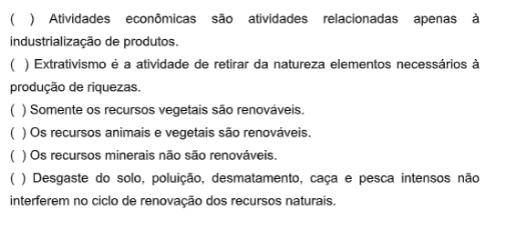

Capítulo 1: O Capitalismo e a construção do espaço geográfico
Questão:Ao estudar esse capítulo, você conseguirá compreender como surgiu o sistema que regula as relações entre países e o consumo no Planeta. Enquanto faz suas leituras e pesquisas, busque compreender como é a sua participação dentro do capitalismo.
Contextualizando – A Indústria Metalúrgica no Brasil e a GlobalizaçãoO setor metalúrgico apresenta expressiva importância no cenário econômico brasileiro, com vasta cadeia produtiva dos segmentos ligados à metalurgia, usinagem e produção de manufaturados metálicos, sendo base de outras atividades relevantes para o país, como a indústria automobilística, construção civil e bens de capital. Embora a indústria brasileira venha sendo afetada pela crise internacional, o PIB do setor siderúrgico, em 2011, avançou 1,6%, em relação ao ano anterior, atribuído, principalmente ao desempenho das indústrias da construção civil e automobilística. Analisando o período 1970/2011, observa-se que a indústria tem demonstrado expansão, passando o PIB setorial de US$ 17,2 bilhões, em 1970, para US$ 58,7 bilhões, em 2011. Em 2011, apresentou um faturamento de aproximadamente US$ 85 bilhões. A balança comercial do setor metalúrgico, tradicionalmente superavitária, apresentou, em 2011, saldo da ordem de US$ 9,8 bilhões, superando em mais de 100% ao do mesmo período do ano anterior, com exportações no valor de US$ 21,5 bilhões e importações de US$ 11,7 bilhões. As exportações, nesse último ano, participaram com 8,4% do total das exportações brasileiras. Os principais responsáveis pelo desempenho positivo das vendas externas brasileira de produtos metalúrgicos são o aço, com participação de 39% do setor, que superou em 45% o valor de 2010; ferroligas com 11% (destacando-se ferro-nióbio com 8%); ferro gusa e fundidos, ambos com participações da ordem de 7%.
Fonte: http://www.mdic.gov.br/legislacao/9-assuntos/categ-comercio- exterior/477-metarlurgia-e-siderurgia
Capitalismo comercial ou pré capitalismoÉ o período das grandes navegações, quando o Novo Mundo (América) passou a fazer parte do Velho Mundo (Europa). Nessa época, Portugal, Espanha, Holanda, França, Inglaterra obtiveram grandes conquistas territoriais fazendo dessa suas colônias. A relação econômica entre as metrópoles e a colônia era através do Pacto Colonial, segundo o qual a colônia só podia manter relações comerciais com a metrópole. Surgiu assim a primeira divisão internacional do trabalho (DIT) que se caracteriza pelo envio de matéria prima das colônias para as metrópoles e de produtos manufaturados das metrópoles para as colônias.
Metais preciosos e especiariasColônias
Metrópole
Produtos manufaturadosInspirados na teoria mercantilista, os países colonizadores, através do comércio com suas colônias, geram acúmulo de capital dando início ao que se chamou de fase industrial.
Pontos fundamentais da política Mercantilista * balança comercial favorável – exportar mais que importar * protecionismo – conjunto de medidas que visavam proteges a produção nacional da produção de outros países. * Metalismo – a riqueza de um país era avaliada pela quantidade de matais que conseguiam acumular. * monopólio – Exclusividade de comércio da Metrópole com a Colônia.
Capitalismo industrialFase compreendida entre o séc. XVIII ao XX marcada pela primeira e segunda Revolução Industrial e pela partilha da África e da Ásia, pelas potências colonialistas europeias – imperialismo. No capitalismo industrial tudo é vendido, até quem não tem meios de produção vende seu produto o trabalho que gasta com seus produtos que fabrica. Este período deu origem ao imperialismo porque os países industrializados precisavam de novos fornecedores de matéria prima e novos consumidores. O DIT do capitalismo industrial não mudou muito, somente o fato de as metrópoles seres industrializado.
Matérias primasColônias
Metrópoles
O filósofo Adam Smith defendia a liberdade dos mercados no capitalismo industrial. O Estado não deveria intervir no processo econômico, caberia apenas zelar pela prosperidade e pela ordem mundial.
O capitalismo financeiro ou monopolistaDesenvolveu-se após a I Guerra Mundial (1914-1918)
O acúmulo de capital precisava de outra atividade que não fosse a industrial, para multiplicar o capital, foi então que surgiram os bancos, as corretoras de valores, grupos empresariais, iniciando a concentração do capital e surgindo o capital financeiro.
Surgem os monopólios e os oligopóliosMonopólio - ocorre quando a empresa domina a oferta de determinado produto ou serviço Oligopólio - quando um grupo de empresas domina o mercado de determinado produto ou serviço. Formas de oligopólio Cartel – empresas independentes, que fazem produtos semelhantes e têm acordos para dominar o mercado desses produtos. Truste - Empresas que abrem mão de sua independência legal e se une para constituir uma única organização. Conglomerado – É constituído por empresas que diversificam sua produção para dominar a oferta de certos produtos ou serviços. Ex. Mitsubishi. Holding – è o estágio mais avançado do capitalismo. As grandes corporações usam essa forma de administração. Depois da II Guerra Mundial (1939-1945), o fato mais marcante do capitalismo financeiro foi a expansão das empresas multinacionais ou transnacionais. Essas empresas mantêm a matriz em seu país de origem e abrem unidades de produção em países subdesenvolvido, em busca de menores custos de matéria prima e mão-de-obra, incentivos fiscais e mercado consumidor. Foi assim que os países subdesenvolvidos se industrializaram (Brasil).
O neoliberalismo prega a não-intervenção do Estado na economia, a não ser para controlar as crises. A política neoliberal cresceu praticamente dominou a economia na década de 1990. Divisão Internacional do Trabalho DITs A descolonização da África e da Ásia o surgimento dos países subdesenvolvidos industrializados e a expansão das transnacionais estabeleceram três DITs bem diferentes durante a fases do capitalismo financeiro.
Desafio de Um Capitalismo SustentávelEntão, até aqui você pode compreender que o Capitalismo é o sistema econômico em que os indivíduos produzem bens e serviços para o consumo público, sob condições de concorrência, tendo como motivação principal o lucro. Para funcionar, este sistema precisa de quatro capitais diferentes: humano: trabalho e inteligência, cultura e organização; Financeiro: dinheiro, investimentos e instrumentos monetários; Manufaturado: máquinas, ferramentas e fábricas; Natural: matéria-prima natural vinda do ecossistema;
Amory Lovins (1947) foi eleito pela revista Time como uma das pessoas mais in - fluentes do mundo no ano de 2009. Lovins é físico e cientista ambiental, mas já estudou música, literatura, matemática, linguística, direito, medicina, fotografia, dentre outros temas. Autor de quase 30 livros, uma de suas principais obras de - fende o conceito de Capitalismo Natural. O Capitalismo Natural compara os modos de produção da natureza (biológico) aos da sociedade industrial, para melhorar nosso estilo de vida. Por exemplo: como o homem constrói prédios imensos, mas nunca chegou perto de produzir uma fibra tão resistente quanto uma teia de aranha? Mais importante ainda: como a aranha produz sem gerar resíduos? O planeta Terra levou 3,8 bilhões de anos para acumular todas as riquezas natu - rais que possui. Mas, com a velocidade que o sistema de vida atual gasta estes recursos, Lovins, adverte: “Mantidos os padrões atuais de uso e degradação, muito pouco há de restar no fim do século XXI”.
Exercícios Sobre Capitalismo Financeiro
Estes exercícios sobre capitalismo financeiro exigem do aluno, além do conhecimento sobre o mercado, um olhar crítico sobre a conjuntura econômica.
1) O capitalismo financeiro é também chamado de “capitalismo monopolista”. Assinale a alternativa que apresenta a característica que melhor indica o uso dessa denominação:
a) legalização dos cartéis
b) avanço do neocolonialismo sobre o terceiro mundo
c) criação dos blocos econômicos
d) formação de empresas multinacionais
2) Assinale a alternativa que indica corretamente um dos itens que surgiram com a emergência do capitalismo financeiro no início do século XX:
a) Bancos
b) Bolsas de Valores
c) Casas de câmbio
d) Centros comerciais
3) Um aspecto presente na economia contemporânea é o crescimento de corporações e empresas, com valorizações sucessivas de suas ações e sua expansão pelo mundo. Muitas dessas instituições buscam controlar o mercado e o fazem a partir de distintas estratégias, a saber:
I. Controle dos preços por associação (legalizada ou não), evitando a livre concorrência;
II. União ou compra entre empresas de um mesmo setor;
III. Controle de uma empresa sobre a outra por meio da compra de ações ou pela existência de sócios em comum.
No Brasil, as duas primeiras práticas não são permitidas, enquanto a terceira é livremente praticada. Os seus corretos nomes, respectivamente, são:
a) Cooperativas, monopólios e associações
b) Fusões, associações e joint venture
c) Cartéis, trustes e holdings
d) Trustes, união monetária, conglomerados comerciais